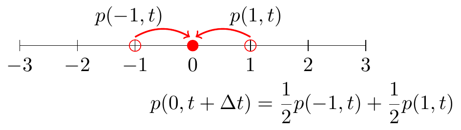
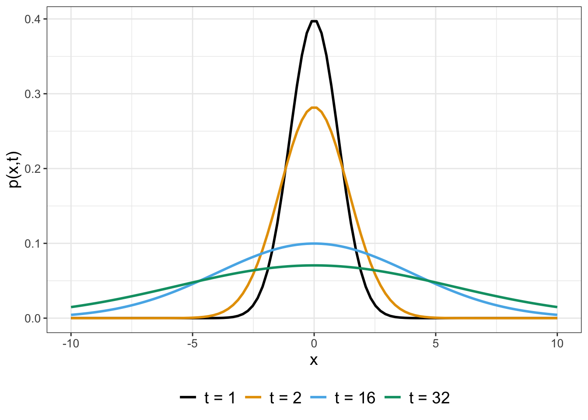
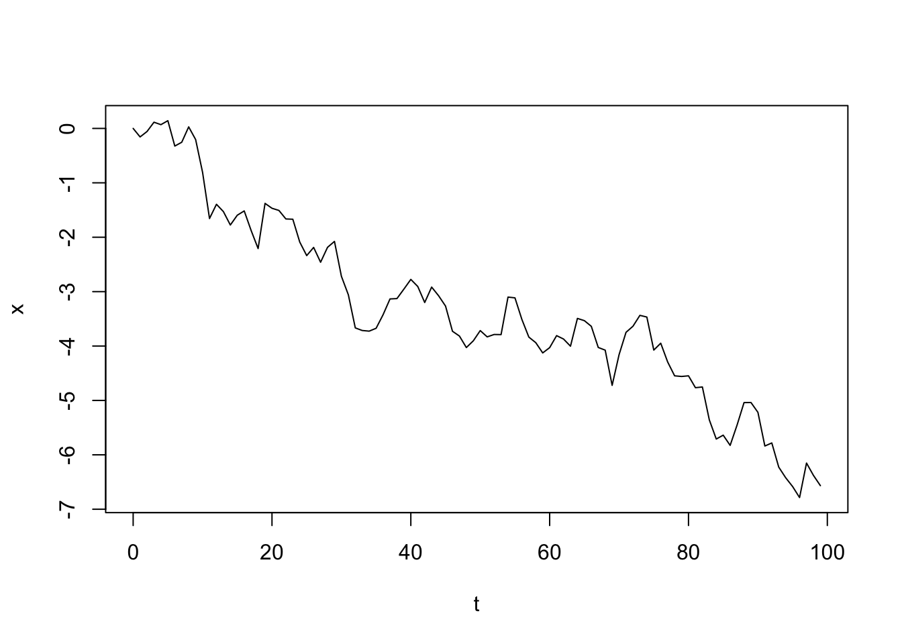
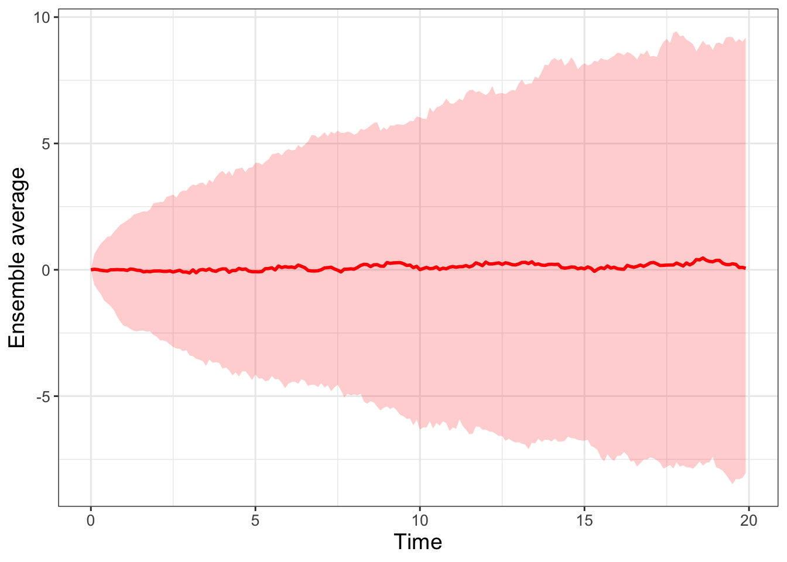

24 Diffusion and Brownian Motion
Studying random walks in Chapter 23 led to some surprising results, namely that for an unbiased random walk the mean displacement was zero but the variance increased proportional to the step number. In this chapter we will revisit the random walk problem from another perspective that further strengthens its connection to understanding diffusion. Let’s get started!
Note
This chapter uses following libraries: ggplot2, tibble, and purrr (all part of the tidyverse) and demodelr. See Section 2.3 on how to install packages. Prior to running any code in this section, include library(tidyverse) and library(demodelr).
24.1 Random walk redux
The random walk derivation in Chapter 23 focused on the position of a particle on the random walk, based upon prescribed rules of moving to the left and the right. To revisit this random walk we consider the probability (between 0 and 1) that a particle is at position \(x\) in time \(t\), denoted as \(p(x,t)\). In other words, rather than focusing on where the particle is, we focus on the chance that the particle will be at a given spot.
A way to conceptualize a random walk is that any given position \(x\), a particle can arrive to that position from either the left or the right (Figure 24.1):
We can generalize Figure 24.1 further where the particle moves in increments \(\Delta x\), as defined in Equation 24.1:
\[ p(x,t+\Delta t) = \frac{1}{2} p(x-\Delta x,t) + \frac{1}{2} p(x+\Delta x,t) \tag{24.1}\]
To analyze Equation 24.1 we apply Taylor approximations on each side of Equation 24.1. First let’s do a locally linear approximation for \(p(x,t+\Delta t)\):
\[ p(x,t+\Delta t) \approx p(x,t) + \Delta t \cdot p_{t}, \]
where we have dropped the shorthand \(p_{t}(x,t)\) as \(p_{t}\). On the right hand side of Equation 24.1 we will compute the 2nd degree (quadratic) Taylor polynomial:
\[ \begin{align*} \frac{1}{2} p(x-\Delta x,t) & \approx \frac{1}{2} p(x,t) - \frac{1}{2} \Delta x \cdot p_{x} + \frac{1}{4} (\Delta x)^{2}\cdot p_{xx} \\ \frac{1}{2} p(x+\Delta x,t) & \approx \frac{1}{2} p(x,t) + \frac{1}{2} \Delta x \cdot p_{x} + \frac{1}{4} (\Delta x)^{2} \cdot p_{xx} \end{align*} \] With these approximations we can re-write Equation 24.1 as Equation 24.2:
\[ \Delta t \cdot p_{t} = \frac{1}{2} (\Delta x)^{2} p_{xx} \rightarrow p_{t} = \frac{1}{2} \frac{(\Delta x)^{2}}{\Delta t} \cdot p_{xx} \tag{24.2}\]
Equation 24.2 is called a partial differential equation - what this means is that it is a differential equation with derivatives that depend on two variables (\(x\) and \(t\) (two derivatives). As studied in Chapter 23, Equation 24.2 is called the diffusion equation. In Equation 24.2 we can also define \(\displaystyle D = \frac{1}{2} \frac{(\Delta x)^{2}}{\Delta t}\) so \(p_{t}=D \cdot p_{xx}\).
The solution to Equation 24.2 is given by Equation 24.3.1
\[ p(x,t) = \frac{1}{\sqrt{4 \pi Dt} } e^{-x^{2}/(4 D t)} \tag{24.3}\]
What Equation 24.3 represents is the probability that the particle is at the position \(x\) at time \(t\). Figure 24.2 shows profiles for \(p(x,t)\) when \(D=0.5\) at different values of \(t\).

As you can see, as time increases the graph of \(p(x,t)\) gets flatter - or more uniform. What this tells you is that the longer \(t\) increases it is less likely to find the particle at the origin.
24.1.1 Verifying the solution to the diffusion equation
Verifying that Equation 24.3 is the solution to Equation 24.2 is a good review of your multivariable calculus skills! As a first step to verifying this solution, let’s take the partial derivative with respect to \(x\) and \(t\).
First we will compute the partial derivative of \(p\) with respect to the variable \(x\) (represented as \(p_{x}\)):
\[ \begin{align*} p_{x} &= \frac{\partial }{\partial x} \left( \frac{1}{\sqrt{4 \pi Dt} } e^{-x^{2}/(4 D t)} \right) \\ &= \frac{1}{\sqrt{4 \pi Dt} } e^{-x^{2}/(4 D t)} \cdot \frac{-2x}{4Dt} \end{align*} \]
Notice something interesting here: \(\displaystyle p_{x} = p(x,t) \cdot \left( \frac{-x}{2Dt} \right)\).
To compute the second derivative, we have the following expressions by applying the product rule:
\[ \begin{align*} p_{xx} &= p_{x} \cdot \left( \frac{-x}{2Dt} \right) - p(x,t) \cdot \left( \frac{1}{2Dt} \right) \\ &= p(x,t) \cdot \left( \frac{-x}{2Dt} \right) \cdot \left( \frac{-x}{2Dt} \right)- p(x,t) \cdot \left( \frac{1}{2Dt} \right) \\ &= p(x,t) \left( \left( \frac{-x}{2Dt} \right)^{2} - \left( \frac{1}{2Dt} \right) \right) \\ &= p(x,t) \left( \frac{x^{2}-2Dt}{(2Dt)^{2}}\right). \end{align*} \]
So far so good. Now computing \(p_{t}\) gets a little tricky because this derivative involves both the product rule with the chain rule in two places (the variable \(t\) appears twice in the formula for \(p(x,t)\)). To aid in computing the derivative we identify two functions \(\displaystyle f(t) = (4 \pi D t)^{-1/2}\) and \(\displaystyle g(t) = -x^{2} \cdot (4Dt)^{-1}\). This changes \(p(x,t)\) into \(p(x,t) = f(t) \cdot e^{g(t)}\). In this way \(p_{t} = f'(t) \cdot e^{g(t)} + f(t) \cdot e^{g(t)} \cdot g'(t)\). Now we can focus on computing the individual derivatives \(f'(t)\) and \(g'(t)\) (after simplification - be sure to verify these on your own!):
\[ \begin{align*} f'(t) &= -\frac{1}{2} (4 \pi D t)^{-3/2} \cdot 4 \pi D = -2\pi D \; (4 \pi D t)^{-3/2} \\ g'(t) &= x^{2}\; (4Dt)^{-2} 4D = \frac{x^{2}}{4Dt^{2}} \end{align*} \]
Assembling these results together, we have the following:
\[ \begin{align*} p_{t} &= f'(t) \cdot e^{g(t)} + f(t) \cdot e^{g(t)} \cdot g'(t) \\ &= -2\pi D \; (4 \pi D t)^{-3/2} \cdot e^{-x^{2}/(4 D t)} + \frac{1}{\sqrt{4 \pi Dt} } \cdot e^{-x^{2}/(4 D t)} \cdot \frac{x^{2}}{4Dt^{2}} \\ &= \frac{1}{\sqrt{4 \pi Dt} } \cdot e^{-x^{2}/(4 D t)} \left( -2 \pi D \; (4 \pi D t)^{-1} + \frac{x^{2}}{4Dt^{2}} \right) \\ &= \frac{1}{\sqrt{4 \pi Dt} } \cdot e^{-x^{2}/(4 D t)} \left( -\frac{1}{2t} + \frac{x^{2}}{4Dt^{2}} \right) \\ &= p(x,t) \left( -\frac{1}{2t} + \frac{x^{2}}{4Dt^{2}} \right) \end{align*} \]
Wow. Verifying that Equation 24.3 is a solution to the diffusion equation is getting complicated, but also notice that through algebraic simplification, \(\displaystyle p_{t} = p(x,t) \left(\frac{x^{2}-2Dt}{4Dt^{2}} \right)\). When we compare \(p_{t}\) to \(D p_{xx}\), they are equal!
The connections between diffusion and probability are so strong. Equation 24.3 is related to the formula for a normal probability density function (Equation 9.1 from Chapter 9)! In this case, the standard deviation in Equation 24.3 equals \(\sqrt{2Dt}\) and is time dependent (see Exercise 24.2)). Even though we approached the random walk differently here compared to Chapter 23, we also saw that the variance grew proportional to the time spent, so there is some consistency.
24.2 Simulating Brownian motion
Another name for the process of a particle undergoing small random movements is Brownian Motion. We can simulate Brownian motion similar to the random walk as discussed in Chapter 23. Brownian motion is connected to the diffusion equation (Equation 24.2) and its solution (Equation 24.3). These connections are helpful when simulating stochastic differential equations. To simulate Brownian motion we will also apply the workflow from Chapter 22 (Do once \(\rightarrow\) Do several times \(\rightarrow\) Summarize \(\rightarrow\) Visualize).
24.2.1 Do once
First we define a function called brownian_motion that will compute a sample path given the:
- number of steps to run the stochastic process;
- diffusion coefficient \(D\);
- timestep \(\Delta t\);
a sample path will be computed (see Figure 24.3).
brownian_motion <- function(number_steps, D, deltaT) {
# D: diffusion coefficient
# deltaT: timestep length
### Set up vector of results
x <- array(0, dim = number_steps)
for (i in 2:number_steps) {
x[i] <- x[i - 1] + sqrt(2 * D * deltaT) * rnorm(1)
}
out_x <- tibble(t = 0:(number_steps - 1), x)
return(out_x)
}
# Run a sample trajectory and plot
try1 <- brownian_motion(100, 0.5, 0.1)
plot(try1, type = "l")
24.2.2 Do several times
Once we have the function for Brownian motion defined we can then run this process several times and plot the spaghetti plot (try the following code out on your own):
number_steps <- 200 # Then number of steps in random walk
D <- 0.5 # The value of the diffusion coefficient
dt <- 0.1 # The timestep length
n_sims <- 500 # The number of simulations
# Compute solutions
brownian_motion_sim <- map(1:n_sims, ~ list()) |>
set_names(paste0("sim", 1:n_sims)) |>
map(~ brownian_motion(number_steps, D, dt)) |>
map_dfr(~.x, .id = "simulation")
# Plot these all together
ggplot(data = brownian_motion_sim, aes(x = t, y = x)) +
geom_line(aes(color = simulation)) +
ggtitle("Random Walk") +
guides(color = "none") Notice the use of the map function from the purrr library. This is a function to do repeated iteration. If you prefer base R implementation, you can replace map(1:n_sims, ~ list()) with replicate(n_sims, { list() }) or even rep(list(), length.out = n_sims).
24.2.3 Summarize and visualize
Finally, the 95% confidence interval is computed and plotted in Figure 24.4, using similar code from Chapter 22 to compute the ensemble average. Note that the horizontal axis is time so each step is scaled by dt.

dt.
I sure hope the results are very similar to ones generated in Chapter 23 (especially Figure 23.4) - this is no coincidence! With the ideas of a random walk developed here and in Chapter 23, we will now be able to understand and simulate how small changes in a variable or parameter affect the solutions to a differential equation. Looking ahead to Chapters 25 and 26, we will simulate stochastic processes using numerical methods (Euler’s method in Chapter 4) with Brownian motion. Onward!
24.3 Exercises
Exercise 24.1 Through direct computation, verify the following calculations:
- When \(\displaystyle f(t)=\frac{1}{\sqrt{4 \pi Dt} }\), then \(\displaystyle f'(t)=-2\pi D (4 \pi D t)^{-3/2}\)
- When \(\displaystyle g(t)=\frac{-x^{2}}{4Dt}\), then \(\displaystyle g'(t)=\frac{x^{2}}{4Dt^{2}}\)
- Verify that \(\displaystyle \left( -\frac{1}{2t} + \frac{x^{2}}{4Dt^{2}} \right)= \left( \frac{x^{2}-2Dt}{(2Dt)^{2}}\right)\)
Exercise 24.2 The equation for the normal distribution is \(\displaystyle f(x)=\frac{1}{\sqrt{2 \pi} \sigma } e^{-(x-\mu)^{2}/(2 \sigma^{2})}\), with mean \(\mu\) and variance \(\sigma^{2}\). Examine the formula for the diffusion equation (Equation 24.3) and compare it to the formula for the normal distribution. If Equation 24.3 represents a normal distribution, what do \(\mu\) and \(\sigma^{2}\) equal?
Exercise 24.3 The function brownian_motion can also be implemented using the function cumsum, or cumulative summation:
brownian_motion_alt = function(number_steps, D, deltaT) {
# number_steps: length of random walk
# D: diffusion coefficient
# deltaT: timestep length
# random lengths
r <- rnorm(number_steps) * sqrt(2 * D * deltaT)
r[1] <- 0 # start at 0
# Results:
out <- cumsum(r)
out <- tibble(t = 0:(number_steps - 1), x = out)
return(out)
}Evaluate brownian_motion_alt to recreate Figure 24.3.
Exercise 24.4 For this problem you will investigate \(p(x,t)\) (Equation 24.3) with \(\displaystyle D=\frac{1}{2}\).
- Evaluate \(\displaystyle \int_{-1}^{1} p(x,10) \; dx\). Write a one sentence description of what this quantity represents.
- Using desmos or some other numerical integrator, complete the following table:
| Equation | Result |
|---|---|
| \(\displaystyle \int_{-1}^{1} p(x,10) \; dx=\) | |
| \(\displaystyle \int_{-1}^{1} p(x,5) \; dx=\) | |
| \(\displaystyle \int_{-1}^{1} p(x,2.5) \; dx=\) | |
| \(\displaystyle \int_{-1}^{1} p(x,1) \; dx=\) | |
| \(\displaystyle \int_{-1}^{1} p(x,0.1) \; dx=\) | |
| \(\displaystyle \int_{-1}^{1} p(x,0.01) \; dx=\) | |
| \(\displaystyle \int_{-1}^{1} p(x,0.001) \; dx=\) |
- Based on the evidence from your table, what would you say is the value of \(\displaystyle \lim_{t \rightarrow 0^{+}} \int_{-1}^{1} p(x,t) \; dx\)?
- Now make graphs of \(p(x,t)\) at each of the values of \(t\) in your table. What would you say is occuring in the graph as \(\displaystyle \lim_{t \rightarrow 0^{+}} p(x,t)\)? Does anything surprise you? (The results you computed here lead to the foundation of what is called the Dirac delta function.)
Exercise 24.5 Numerical integration can also be done using R and the command integrate. Consider the following code that defines a function pxt, which is a shorthand for \(p(x,t)\) in Equation 24.3:
pxt = function(x, t, D = 1) {
exp(-x^2 / (4*D*t)) / sqrt(pi*4*D*t)
}
integrate(pxt, lower = -1, upper=1, t = 1, D = 1/2)Let \(D=1/2\) and \(t=1\) and use R to calculate the following integrals:
| Equation | Result |
|---|---|
| \(\displaystyle \int_{-0.1}^{0.1} p(x,10) \; dx=\) | |
| \(\displaystyle \int_{-1}^{1} p(x,5) \; dx=\) | |
| \(\displaystyle \int_{-10}^{10} p(x,2.5) \; dx=\) | |
| \(\displaystyle \int_{-100}^{100} p(x,1) \; dx=\) |
What do you notice as the lower and upper limits of integration increase?
Exercise 24.6 Consider the function \(\displaystyle p(x,t) = \frac{1}{\sqrt{4 \pi D t}} e^{-x^{2}/(4 D t)}\). Let \(x=1\).
- Explain in your own words what the graph \(p(1,t)\) represents as a function of \(t\).
- Graph several profiles of \(p(1,t)\) when \(D = 1\), \(2\), and \(0.1\). How does the value of \(D\) affect the profile?
Exercise 24.7 In statistics an approximation for the 95% confidence interval is twice the standard deviation. Confirm this by adding the curve \(y=2\sqrt{2Dt}\) to the ensemble average plot in Figure 24.4. Recall that \(D\) was equal to \(0.5\) and \(\Delta t = 0.1\), so the horizontal axis will need to be scaled appropriately.
Exercise 24.8 Consider the function \(\displaystyle p(x,t) = \frac{1}{\sqrt{\pi t}} e^{-x^{2}/t}\):
- Using your differentiation skills compute the partial derivatives \(p_{t}\), \(p_{x}\), and \(p_{xx}\).
- Verify \(p(x,t)\) is consistent with the diffusion equation \(\displaystyle p_{t}=\frac{1}{4} p_{xx}\).
Exercise 24.9 Modify the code used to generate Figure 24.4 with \(D=10, \; 1, \; 0.1, \; 0.01\). Generally speaking, what happens to the resulting ensemble average when \(D\) is small or large? In which scenarios are stochastic effects more prevalent?
Exercise 24.10 For the one-dimensional random walk we discussed where there was an equal chance of moving to the left or the right. Here is a variation on this problem.
Let’s assume there is a chance \(v\) that it moves to the left (position \(x - \Delta x\)), and therefore a chance is \(1-v\) that the particle remains at position \(x\). The basic equation that describes the particle’s position at position \(x\) and time \(t + \Delta t\) is:
\[ p(x,t + \Delta t) = (1-v) \cdot p(x,t) + v \cdot p(x- \Delta x,t) \]
Apply the techniques of local linearization in \(x\) and \(t\) to show that this random walk is used to derive the following partial differential equation, called the advection equation:
\[ p_{t} = - \left( v \cdot \frac{ \Delta x}{\Delta t} \right) \cdot p_{x} \]
Note: you only need to expand this equation to first order
Exercise 24.11 Complete Exercise 23.12 if you haven’t already. If Equation 24.3 (a normal distribution) is the solution to the one-dimensional diffusion equation, what do you think the solution would be in the bivariate case?
Keener, James P. 2021. Biology in Time and Space: A Partial Differential Equation Modeling Approach. Providence, Rhode Island: American Mathematical Society.